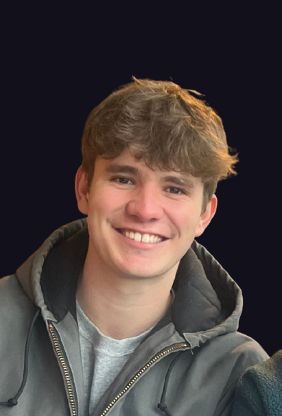

Hey there! I'm
Software Engineer & Data Scientist

I'm a UW–Madison graduate with degrees in Computer Science and Data Science. I've always been intrigued by computers and their ability to abstract away redundant tasks. With the rise of AI, I'm fascinated with data systems and what they can unlock.
Outside of work I'm an athlete at heart. I love lifting, competing, and playing just about any sport. Skiing is my biggest passion, growing up snow skiing in Park City, Utah and water skiing on the lakes up north in Wisconsin. I competed on the UW-Madison collegiate waterski team, which pushed my skiing to another level and gave me some of the most memorable experiences of college. You'll see that bleed into some of my projects too.
I'm also drawn to adventure and new experiences. Having lived in Australia, Thailand, and Czechia, I've developed a real love for experiencing new places and learning from the people in them. When I'm closer to home I enjoy hiking, camping, and spending time outdoors. I also meditate regularly and dabble in ceramics. I think staying sharp mentally, physically, and creatively matters just as much as staying sharp technically.
University of Wisconsin–Madison
Madison, Wisconsin
Co-built a real-time trick water skiing calculator for competitive athletes and judges, enforcing official IWWF 2025 rules with a two-pass system, duplicate detection, full modifier support, and reverse trick management. Solely designed and integrated the ML pipeline: trained skill-tiered GRU models on real Nationals and Regionals competition data, exported them to ONNX, and wired up on-device inference via ONNX Runtime Web with no backend required. The models achieve a 95% hit rate in the top 5 suggestions and are displayed with heatmap-colored confidence buttons. Also contributed to the React frontend. Deployed as a web app and native iOS and Android app via Capacitor.
Phase 1 of a computer vision pipeline to automatically score competitive trick water skiing runs. Fine-tuned a pretrained ResNet-18 to classify skier body orientation (forward, back, left, right) from still frames, serving as the foundation for identifying tricks as orientation sequences over time. Built a 240-image dataset from scratch by sourcing and labeling archived tournament footage. Key breakthroughs included removing rotational data augmentation (which was destroying orientation signal) and adding a center crop to cut background noise, pushing test accuracy from roughly 50% to 81-85%.
Implemented a Spark-style data processing engine in C, supporting lazy RDD transformation pipelines (map, filter, partitionBy, and join) across partitioned datasets. The engine parallelizes execution through a hand-built POSIX thread pool, with a recursive post-order DAG scheduler that resolves all partition dependencies before submitting work, preventing deadlocks in deep dependency chains. Task timing is captured at microsecond resolution via a dedicated monitoring thread.
Built a fully containerized 6-node distributed cluster with Apache Spark and HDFS using Docker Compose to analyze ~400k real Wisconsin mortgage applications (HMDA 2021). Demonstrated all three Spark query interfaces (RDD, DataFrame, Spark SQL), designed a Hive data warehouse with bucketing for partition-local aggregations, and analyzed broadcast join vs. shuffle behavior through query plan inspection. Trained a PySpark MLlib Decision Tree classifier to predict loan approval, achieving 89.55% accuracy and identifying depth-10 as the optimal complexity before overfitting.
Ataccama · Prague, Czechia · On-site
Worked on an AI agent team at a data governance company, focused on fine-tuning LLMs in Azure AI Foundry to reduce system prompt size and building evaluation infrastructure to measure model improvements.
Instructure · Salt Lake City · Remote
Worked with the marketing data team at an edtech SaaS company, independently owning an end-to-end ETL pipeline project to support media mix modeling and marketing spend analysis.
Instructure · Salt Lake City · Hybrid
Supported the Revenue Operations team at an edtech SaaS company with SQL-driven dashboard validation and data work, while learning the full RevOps and marketing data stack.
Inspirit AI · United States · Remote
Worked with a team developing an app to identify cancerous skin lesions from a photo. I specifically was in charge of data manipulation to enlarge training datasets for the model. I would often stretch a training set of a couple of photos by multiple factors through photo editing. I would make specific editing choices based off of accuracy vs. performance tradeoffs.
This experience was a turning point for me. Watching a model's performance shift dramatically based purely on how the data was prepared, not the architecture, not the algorithm, made it clear just how foundational data really is. It sparked a genuine curiosity in me about data quality, representation, and scale that has shaped everything I've pursued since.
“Calvin consistently delivered high-quality work with minimal supervision. He actively integrated into the team, sought out opportunities to learn, provided constructive feedback, and wasn't afraid to suggest improvements. The cooperation exceeded my expectations.”
“I supervised Calvin DeBellis during his internship at Ataccama in the summer of 2025. Throughout his time with us, Calvin demonstrated strong technical and analytical skills. He was able to take on a complex topic, break it down into manageable parts, and systematically work through each step. He approached his work with autonomy, clear communication of progress, and was not afraid to ask thoughtful and relevant questions when needed. Calvin successfully handled several technical challenges, including configuring our environments, connecting to cloud services, writing python scripts to extract data necessary for the project, and performing fine-tuning and evaluation of large language models in an agenting framework. He consistently delivered high-quality work with minimal supervision. Beyond his technical abilities and problem-solving mindset, I would like to emphasize Calvin's soft skills. He actively integrated into the team. He regularly attended team meetings, sought out opportunities to learn, provided constructive feedback, and wasn't afraid to suggest improvements — all of which were appreciated by the team. Overall, I enjoyed the cooperation with Calvin and it exceeded my expectations. Thus I can recommend him for any future academic or professional opportunities.”
“From day one, Calvin showed strong initiative and a genuine drive to learn. He ran experiments, turned results into actionable insights, and contributed meaningfully to team discussions. I would gladly recommend him for roles in AI, data science, or engineering.”
“I had the pleasure of managing Calvin DeBellis during his internship on our AI team at Ataccama in the summer of 2025. From day one, Calvin showed strong initiative and a genuine drive to learn. His main focus was evaluating the impact of fine-tuning large language models and improving our internal evaluation framework, which plays an important role in how we measure model performance. He approached his work with curiosity, structure, and solid technical thinking. He ran experiments, turned results into actionable insights, and contributed meaningfully to team discussions. His ability to adapt quickly, communicate clearly, and collaborate with others made him a strong part of the team. I really enjoyed working with Calvin and would gladly recommend him for roles in AI, data science, or engineering.”
“Calvin took full ownership of this project, demonstrating exceptional initiative and technical skill. He independently led meetings, showcasing impressive leadership abilities. Calvin's analytical mindset, problem-solving skills, and dedication to excellence made him an invaluable asset to our team.”
“I had the pleasure of managing Calvin during his summer internship at Instructure in 2024. During this time, he played a pivotal role in developing our new Marketing Media Mix model, which uses data science to determine optimal budget allocations across various marketing channels. Calvin took full ownership of this project, demonstrating exceptional initiative and technical skill. He worked directly with stakeholders at Instructure and a third-party company to define the scope of work and project requirements. He independently led meetings, showcasing impressive leadership abilities. Calvin was solely responsible for collecting and organizing data, skillfully setting up queries to consolidate all relevant information into a comprehensive table within our data warehouse. His attention to detail and methodical approach ensured that the data was not only accurate but also readily accessible for analysis. One of Calvin's standout contributions was his ability to troubleshoot issues as they arose. He identified a cumbersome manual process that was hindering our efficiency and successfully devised a solution using Python to automate it. This significantly improved the timeliness and accuracy of our data collection, enhancing the overall effectiveness of our Marketing Media Mix model. Calvin's analytical mindset, problem-solving skills, and dedication to excellence made him an invaluable asset to our team. I have no doubt that he will bring the same level of commitment and expertise to any future role and will be a tremendous asset to any organization.”
“Calvin takes initiative to ask questions and broaden his views beyond just his work to understand business goals as a whole. His best qualities are his curiosity and ownership which lead him to a growth mindset. He continues to seek new opportunities for continuous improvement and deliver great results.”
“Calvin takes initiative to ask questions and broaden his views beyond just his work to understand business goals as a whole. I have observed that he has a strong work ethic and always takes advantage of additional learning opportunities. For example, Calvin proactively asked me to mentor him to explore different career paths based on my experience. To top it off, he works well with others inside his team, cross functionally, and outside of our company. Calvin is a well rounded employee with technical and social skills alike. I think his best qualities are his curiosity and ownership which lead him to a growth mindset. With that, he continues to seek new opportunities for continuous improvement and deliver great results.”
“I would highly recommend him for a data-focused role. Calvin worked with multiple teams and became proficient in data manipulation and analysis. He received high praises from all team leads who worked with him. Calvin has a very positive attitude towards his job.”
“I had the pleasure of managing Calvin over a summer internship at Instructure, and would highly recommend him for a data-focused role. During his time at Instructure, Calvin worked with multiple teams and became proficient in data manipulation and analysis. He used tools like Salesforce, Tableau, and Snowflake, and received high praises from all team leads who worked with him. Calvin has a very positive attitude towards his job, and was willing to dive into both fun and tedious projects alike.”